Next: Möhring Up: Fluid Section Types: Gases Previous: Cross, Split Contents
Properties: adiabatic, isentropic, asymmetric
A vortex arises, when a gas flows along a rotating device. If the inertia of the gas is small and the device rotates at a high speed, the device will transfer part of its rotational energy to the gas. This is called a forced vortex. It is characterized by an increasing circumferential velocity for increasing values of the radius, Figure 110.
Another case is represented by a gas exhibiting substantial swirl at a given radius and losing this swirl while flowing away from the axis. This is called a free vortex and is characterized by a hyperbolic decrease of the circumferential velocity, Figure 110. The initial swirl usually comes from a preceding rotational device.
The equations for the forced and free vortex are derived from:
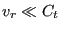 is assumed, i.e. the radial velocity is negligible w.r.t. the tangential velocity.
| (133) |
e.g. equal to the value at the inner or outer position.
Integrating the differential equation (132) from  to
to  (after substitution of the
isentropic assumption and separation of the variables
(after substitution of the
isentropic assumption and separation of the variables
 and
and  ; the index “i” stands for inner (smallest radius), “o” stands for
outer (largest radius)) leads to
; the index “i” stands for inner (smallest radius), “o” stands for
outer (largest radius)) leads to
The forced vortex, Figure 111, is geometrically characterized by its
upstream and downstream radius. The direction of the flow can be centripetal
or centrifugal, the element formulation works for both. The core swirl ratio  , which takes values
between 0 and 1, denotes the degree the gas rotates with the rotational
device. If 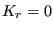 there is no transfer of rotational energy, if 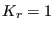 the
gas rotates with the device. The theoretical pressure ratio across a forced
vertex satisfies (substitute
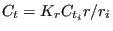 in Equation (134))
, which takes values
between 0 and 1, denotes the degree the gas rotates with the rotational
device. If 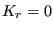 there is no transfer of rotational energy, if 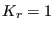 the
gas rotates with the device. The theoretical pressure ratio across a forced
vertex satisfies (substitute
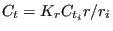 in Equation (134))
| 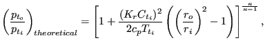 | (135) |
where 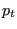 is the total pressure,  the total temperature and
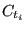 the circumferential velocity of the rotating device. It can be derived from the
observation that the circumferential velocity of the gas varies linear with the
radius (Figure 110). Notice that the pressure at the outer radius
always exceeds the pressure at the inner radius, no matter in which direction
the flow occurs.
the total temperature and
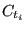 the circumferential velocity of the rotating device. It can be derived from the
observation that the circumferential velocity of the gas varies linear with the
radius (Figure 110). Notice that the pressure at the outer radius
always exceeds the pressure at the inner radius, no matter in which direction
the flow occurs.
The pressure correction factor  allows for
a correction to the theoretical pressure drop across the vortex and is defined
by
allows for
a correction to the theoretical pressure drop across the vortex and is defined
by
 |
(136) |
Finally, the
parameter
 controls the temperature increase due to the vortex. In
principal, the rotational energy transferred to the gas also leads to a
temperature increase. If the user does not want to take that into account
controls the temperature increase due to the vortex. In
principal, the rotational energy transferred to the gas also leads to a
temperature increase. If the user does not want to take that into account
 should be selected, else
should be selected, else
 or
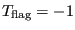 should be
specified, depending on whether the vortex is defined in the absolute
coordinate system or in a relative system fixed to the rotating device,
respectively. A relative coordinate system is active if the vortex element is
at some point in the network preceded by an absolute-to-relative gas element
and followed by a relative-to-absolute gas element. The calculated temperature
increase is only correct for . Summarizing, a forced
vortex element is characterized by the following constants (to be specified in
that order on the line beneath the *FLUID SECTION,
TYPE=VORTEX FORCED card):
or
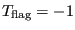 should be
specified, depending on whether the vortex is defined in the absolute
coordinate system or in a relative system fixed to the rotating device,
respectively. A relative coordinate system is active if the vortex element is
at some point in the network preceded by an absolute-to-relative gas element
and followed by a relative-to-absolute gas element. The calculated temperature
increase is only correct for . Summarizing, a forced
vortex element is characterized by the following constants (to be specified in
that order on the line beneath the *FLUID SECTION,
TYPE=VORTEX FORCED card):
For the free vortex the value of the circumferential velocity  of the gas at entrance is the most important
parameter. It can be defined by specifying the number
of the gas at entrance is the most important
parameter. It can be defined by specifying the number  of the preceding
element, usually a preswirl nozzle or another vortex, imparting the circumferential
velocity. In that case the value
of the preceding
element, usually a preswirl nozzle or another vortex, imparting the circumferential
velocity. In that case the value  is not used. For centrifugal flow the value of the imparted
circumferential velocity
is not used. For centrifugal flow the value of the imparted
circumferential velocity
 can be further modified by the swirl loss factor
can be further modified by the swirl loss factor  defined by
defined by
 |
(137) |
Alternatively, if the user
specifies 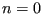, the circumferential velocity at entrance is taken from the
rotational speed  of a device imparting the swirl to the gas. In that case
of a device imparting the swirl to the gas. In that case  and
and  are not
used and
are not
used and
 . The theoretical pressure ratio across a free
vertex satisfies (substitute
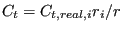 in Equation (134))
. The theoretical pressure ratio across a free
vertex satisfies (substitute
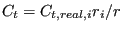 in Equation (134))
![$\displaystyle \left ( \frac{p_{t_o}}{p_{t_i}} \right ) _{theoretical}= \left[ 1...
...eft ( \frac{r_i}{r_o} \right ) ^2 \right) \right ] ^ {\frac{\kappa}{\kappa-1}},$](img657.png) |
(138) |
where is the total pressure,  the total temperature and
the total temperature and
 the circumferential velocity of the gas. It can be derived from the
observation that the circumferential velocity of the gas varies inversely
proportional to the
radius (Figure 110). Notice that the pressure at the outer radius
always exceeds the pressure at the inner radius, no matter in which direction
the flow occurs.
the circumferential velocity of the gas. It can be derived from the
observation that the circumferential velocity of the gas varies inversely
proportional to the
radius (Figure 110). Notice that the pressure at the outer radius
always exceeds the pressure at the inner radius, no matter in which direction
the flow occurs.
Here too, the pressure can be corrected by a pressure correction factor
 and a parameter
and a parameter
 is introduced to control the way the
temperature change is taken into account. However, it should be noted that for
a free vortex the temperature does not change in the absolute
system. Summarizing, a free vortex element is characterized by the following constants (to be specified in
that order on the line beneath the *FLUID SECTION,
TYPE=VORTEX FREE card):
is introduced to control the way the
temperature change is taken into account. However, it should be noted that for
a free vortex the temperature does not change in the absolute
system. Summarizing, a free vortex element is characterized by the following constants (to be specified in
that order on the line beneath the *FLUID SECTION,
TYPE=VORTEX FREE card):
Example files: vortex1, vortex2, vortex3.